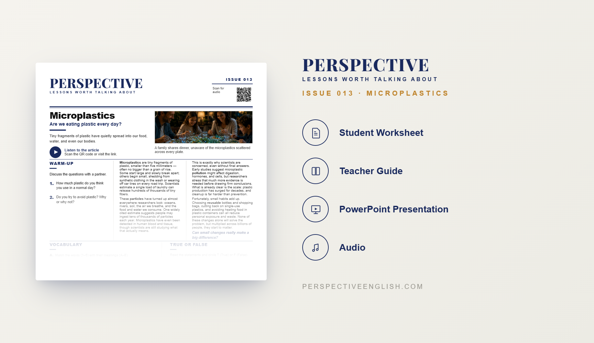

ISSUE 013
Microplastics
Are tiny plastics becoming a big problem?
A ready-to-teach English lesson exploring Microplastics, loneliness, emotional support, and whether a machine can become a real friend.
Collection 02 includes Issues 011–015.

LESSON PREVIEW

ABOUT THIS LESSON
Microplastics are now found in oceans, rivers, food, drinking water, and even inside the human body.
This magazine-style English lesson explores where these tiny plastic particles come from, how they spread, and why scientists are concerned about their possible effects on people and the environment.
Students read an original article, learn useful vocabulary, and take part in discussion, critical thinking, speaking, and writing activities about pollution, responsibility, and solutions.
FROM THE ARTICLE
WHAT'S INCLUDED
- Magazine-style student worksheet
- Original article and audio recording
- Vocabulary and reading activities
- Discussion and critical-thinking tasks
- Speaking challenge and writing prompt
- Teacher guide and complete answer key
- Classroom presentation
GET THE COMPLETE LESSON
Ready to teach Microplastics?
Purchase this lesson individually or save with Perspective Collection 02.
Secure checkout and instant digital delivery through Payhip.